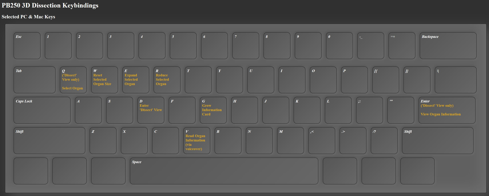

YThis example is a simple starting point to build hands-on botanical dissections and anatomy lessons within the web browser. For more information on Lily anatomy, please see NCSU extension resources as well as this Publication 